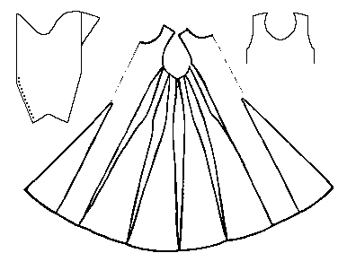

Tunic
Herjolfsnes no.41

Pattern drawing
based on N�rlund
A long sleeved man's garment. It has waist-high gores in front and back, and four
shaped gores on each side running from the arm holes to the hem. The side gores are only 4
cm (1.6") at the waist and along the torso. They begin to increase abruptly in width
about the hip level.
Length from Shoulder to Hem: 120 cm (47.2")
Waist Circumference: 100 cm (39.4")
Hem Circumference: 425 cm (167")
Armhole Circumference: 63 cm (24.8")
Neck Cirumference: 88 cm (34.6")
Sleeve Length: 62.5 cm (24.6")
 The sleeves are full. There are 15
closely set buttons running on each sleave from the elbow to the wrist. These buttons are
each made from a glued wad of cloth, that is then covered in cloth.
The sleeves are full. There are 15
closely set buttons running on each sleave from the elbow to the wrist. These buttons are
each made from a glued wad of cloth, that is then covered in cloth.
In the neck, the material is turned under and the raw edge set with an overcast stitch.
Where the seams of the gores come close together at the waist they are ornamented with
a row of backstitches making them very noticable. The long opening of the sleeve is
decorated with a row of backstitching. The bottom hem is decorated with two rows of
backstitching. The material is a thin "fourshaft twill"; dark brown, although
the weft is slightly more pale than the warp.
Some Sources:
- N�rlund, Poul. "Buried Norsemen at Herjolfsnes: an archaeological and historical
study." Meddelelser om Gronland: Udgivne af Kommissionen for ledelsen af de
geologiske og geogrfiske undersogelser i Gronland. Bind LXVII. Kobenhavn: C.A.
Reitzel, 1924.
Go to Tunic Page; Herjolsnes Site
Page
Some Clothing of the Middle Ages -- Tunics -- Herjolfsnes 41, by I. Marc Carlson,
Copyright 1996 This code is given for the free exchange of information, provided the
Author's Name is included in all future revisions, and no money change hands-